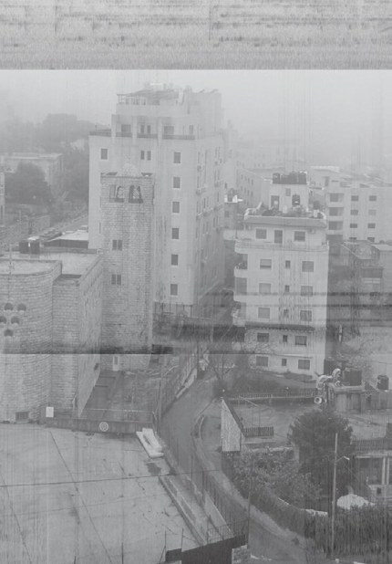

Politics of Listening: Soundscapes from Ramallah, Palestine
Deutschlandfunk Kultur, STEGI.RADIO, Wave Farm, 2020–2025
- Edition #12, Radio In Between Spaces with Meira Asher, Germany, 30.07.2020
- Kurzstrecke 112, Deutschlandfunk Kultur, Germany, 29.07.2021
- Transmission Ecologies: Episode 27, STEGI.RADIO, Greece, 16.05.2023
- Transmission Ecologies: Episode 27, Wavefarm Radio, USA, 08.02.2025

© Lefteris Krysalis